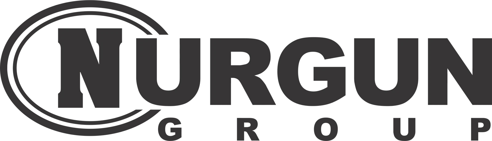

UĞUR
Nurgun Motors — ilin dileri.


QRUP HAQQINDA
“Nurgün” Şirkətlər Qrupu 4 oktyabr 1994-cü ildə təsis edilmişdir.
Qrup avtomobil biznesi, maliyyə və lizinq xidmətləri, istehsalat, ticarət və distribusiya, supermarketlər, tikinti və yükdaşımaları kimi müxtəlif istiqamətləri birləşdirir.
Qrupun yaranması və Nurgun İnşaatın fəaliyyəti.
Caspian Transport beynəlxalq yükdaşımaları bazarında fəaliyyətə başlayır.
Bello yuyucu vasitələr fabrikinin fəaliyyəti.
TANINMA VƏ MÜKAFATLAR
Nurgun Motors — ilin dileri.
Nurgun Motors — ilin servisi.
İlin servisi nominasiyası.
INFINITI — ilin lüks avtomobil brendi.